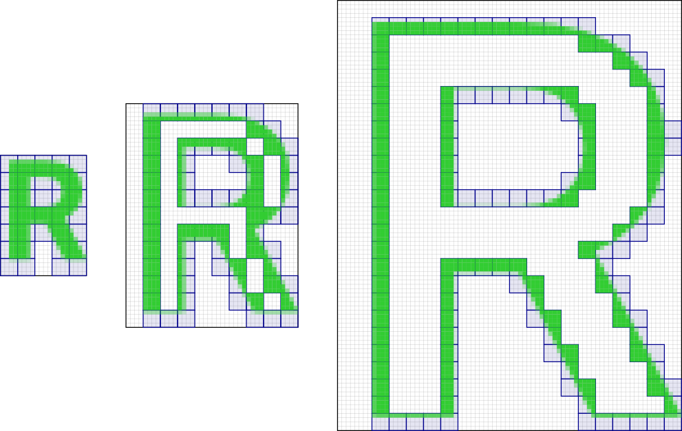

Linebender in May 2025
Olivier Faure, June 17, 2025
Linebender is an informal open-source organization working on various projects to advance the state of the art in GUI for the Rust programming language.
RustWeek
This month saw the RustWeek 2025 conference, in Utrecht in the Netherlands.
A lot of things happened!
The talks
Raph Levien gave a talk titled Faster, easier 2D vector rendering, about Vello's new architecture. The talk had some nice visuals and a pretty cool demo!
Matt Campbell gave a talk titled AccessKit: reusable UI accessibility, showing off AccessKit and its API and architecture. The talk also came with a cool demo, showcasing AccessKit's Android integration.
The Anniversary
RustWeek also saw the release of Rust 1.87, which coincided (to the day!) with the "10 years of Rust" party.
Some members of Linebender were at the party, which was a great experience. See who you can spot on the group photo!

The Unconference
The Linebender team also went to the UI Unconference, a roundtable where various subjects were broached (accessibility, platform integrations, SVG rendering, etc).
Overall it felt like various project leaders were increasingly interested in pooling resources and using common libraries, but there is still a long way to go on that front.
Masonry
Masonry is the widget system developed by Linebender. It provides a non-opinionated retained widget tree, designed as a base layer for high-level GUI frameworks.
- xilem#950: Adds support for
ui-eventscrate. - xilem#961: Adds default property values and a default theme.
- xilem#973: Releases Masonry 0.3.0.
xilem#960: Adds new shadow property to buttons.
Xilem
Xilem is our flagship GUI project, inspired by SwiftUI, which uses Masonry for its widgets. It lets you build user interfaces declaratively by composing lightweight views together, and will diff them to provide minimal updates to a retained layer.
Vello
Vello is our GPU vector renderer. It can draw large 2D scenes with high performance, using GPU compute shaders for most of the work.
- vello#524: Implements pipeline caching, drastically improving Android startup times.
- vello#963: Rounds vertical hinting offsets.
- vello#966: Releases Vello 0.5.0.
This month we continued seeing a massive amount of activity on Vello's sparse strips renderers (see Raph's video above for details), thanks in part to the tireless contributions of Canva developers Alex Gemberg, Taj Pereira and Andrew Jakubowicz, and to the continued work of Laurenz Stampfl as part of his master's project.
- vello#937: Adds support for rendering bitmap and COLR glyphs.
- vello#948: Adds support for drawing blurred, rounded rectangles.
- vello#957: Adds clipping and spatiotemportal allocation to vello_hybrid.
- vello#1011: Adds native WebGL backend for vello_hybrid.
- vello#1008: Makes vello_common and vello_cpu no_std.
This month also saw the first release of vello_cpu!
As the name implies, vello_cpu is a CPU-only renderer for vector graphics using Vello's tech stack.
It's still very experimental (version 0.0.1) and likely to see all sorts of breaking changes, and performance isn't great, but if you want to experiment with it, you can run cargo add vello_cpu in your terminal and start hacking away.
Parley
Parley is a text layout library. It handles text layout, mostly at the level of line breaking and resolving glyph positions.
- parley#334: Adds editor features required for Android IME.
- parley#344: Adds option to quantize vertical layout metrics.
- parley#346: Enables Parley/Fontique to compile to wasm with default features enabled, for better discoverability of the wasm target.
- parley#349: Releases Parley 0.4.0.
- parley#362: Adds absolute and metrics-relative line height styles.
Get Involved
We welcome collaboration on any of our crates. This can include improving the documentation, implementing new features, improving our test coverage, or using them within your own code.
We host an hour long office hours meeting each week where we discuss what's going on in our projects. See #office hours in Zulip for details. We've also started a separate office hours time dedicated to the renderer collaboration, details also available at that link.
- Daniel and Olivier's "office hours" appointments can still be booked by anyone for open-ended discussion of the ecosystem.